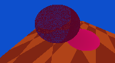

Checkpoint 1: Setting the Scene
Image:

Discovered Scene Values:
Coordinates: [x, y, z]
Sphere 1 (dark blue): size: [1.00, 1.00, 1.00], pos: [7.0344 m, -1.4544 m, 2.8064 m]
Sphere 2 (light blue): size: [1.115, 1.115, 1.115], pos: [4.1671 m, 0.66827 m, 1.1445 m]
Floor: size: [1.983, 1.003, 1.00], pos: [0 m, 0 m, 0 m]
Light Source: size: [0.01, 0.01, 0.01], pos: [12.5 m, -1.22 m, 3.7 m]
Camera: position: [14.241 m, -2.3715 m, 3.9181 m]
Checkpoint 2: Raytracing Framework
Adjusted Scene Values:
Coordinates: [x, y, z]
Sphere 1: radius: 1.00, pos: [0.0, 0.3, 1.5]
Sphere 2: radius: 1.115, pos: [2, -0.8, 2.5]
Floor: size: [0,0,0], pos: [0, 0, 0]
Light Source: size: [1,1,1], pos: [12.5, -1.22, 3.7]
Camera: position: [0.0, 0.0, 0.0]
Image:

Extra: Moving the Camera
Camera Eyepoint = [0.0, 0.01, 0.0]
Camera Lookat = [0.0, 0.5, -0.5]
Camera Up = [0.0, 1, 0.0]
Checkpoint 3: Basic Shading
Image:
Extra: Adding another light at [0.5, 10.0, 2.0]
Extra 2: Adding a third light at [0.001, 0.001, 0.001]
Extra 3: Shading using a Phong-Blinn Model
Checkpoint 4: Procedural Shading
Image:

Checkpoint 5: Reflection
Image:

Checkpoint 6: Transmission
Image:
Checkpoint 7: Tone Reproduction
Images:
Using Ward's Operator Method
Low-Range Lighting
Mid-Range Lighting
High-Range Lighting
Using Reinhard's Model
Low-Range Lighting
Mid-Range Lighting
High-Range Lighting
Advanced Assignment: Advanced Tone Reproduction
Images:
Ward:

Adaptive Logarithmic Mapping: